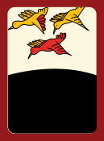
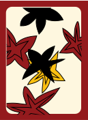
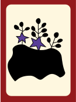

Go-stop is a traditional Korean card game that has been played for many generations, played with the hanafuda card deck. It's usually played during family gatherings or traditional holidays. It's so popular that gambling with this game was declared illegal at one point. This is a very modified, simplified version of the game.
The goal of the game is to capture cards that have the same "month", which are denoted by common themes in the design of the card.The way the game is played traditionally, in each turn, the players try to match one of the six cards lying face-up on the table with the card of the same "month" in their dealt hands. If they have no matching cards, they must give up a card, and if they have four cards from the same month, you automatically win the game. The turn continues with the player flipping over the top card from the draw pile to look for a card with the same month and to collect matching cards and consequently show your opponents. Players can also capture cards during their turn. The game ends when cards run out or until a player has enough points, which is usually predetermined before the start of the game.
Special rules can also be in play! What's unique about this game is that although it is played very similarly like poker, the rules can vary by family or region. For example, with my family in Seoul, we play with the Joker card, which can add points to certain combinations.
There are two players. The player whose turn it is will draw a card, which has a specific numeric value. The value of the card is added to the current player's score, unless either card comes up as a junk card. If this happens, this player's turn is over, and it is the other player’s turn. After each card draw, the current player can either draw another card, or go (assuming a junk card not drawn) or if the current player feels that luck is running thin, they can pass to the other player, or stop. The first player to get 30 points or higher wins.
The values of the cards are as follows:
Animal (끗): 20 points
Bright (광): 10 points
Junk (피): 5 points
 